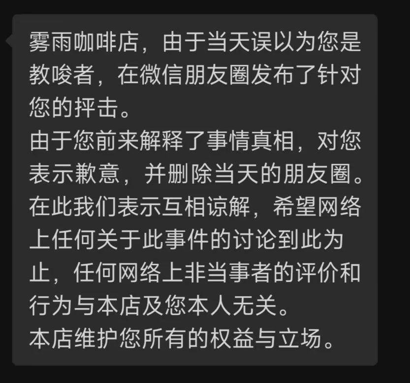
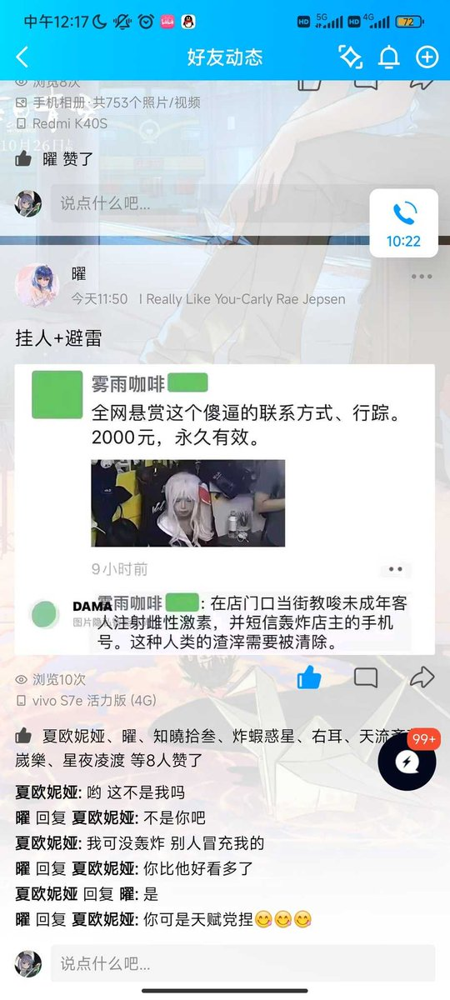

寒涟漪
@HANLIANYI331
@Ch0coIates_W00O @Nonzenki


寒涟漪
@HANLIANYI331
@vru8JvwdzpO909i @Nonzenki @xiaochuAnZu 另外，假定你所叙述的行为都如实存在，你也同样提到店方正确的处理方式是“劝阻和报警处理”。店方如果真的报警处理，那最后双方一点事都没有。
樹状チョコレゐト
@Ch0coIates_W00O
@Nonzenki https://t.co/Yy5z1bDx6t